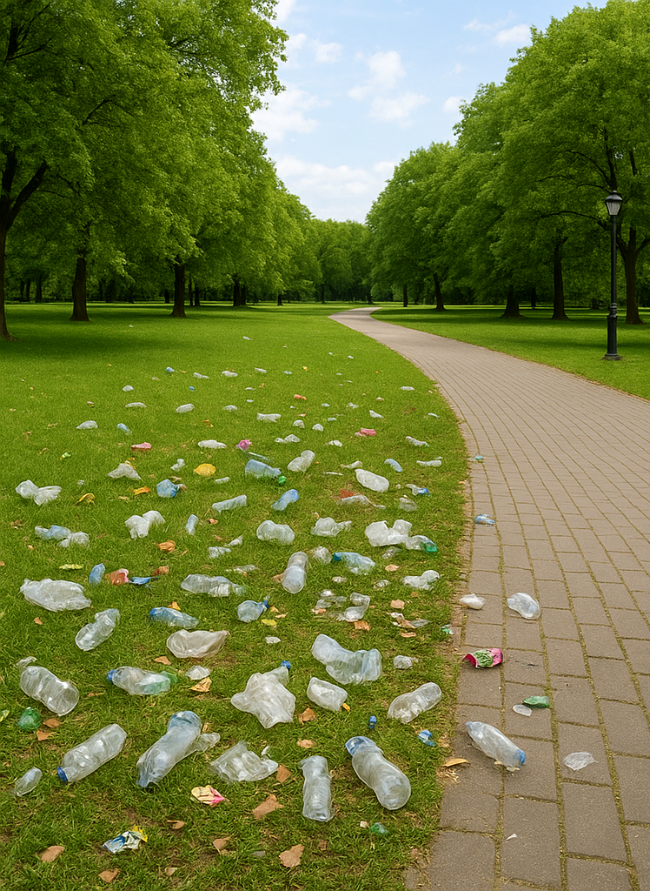
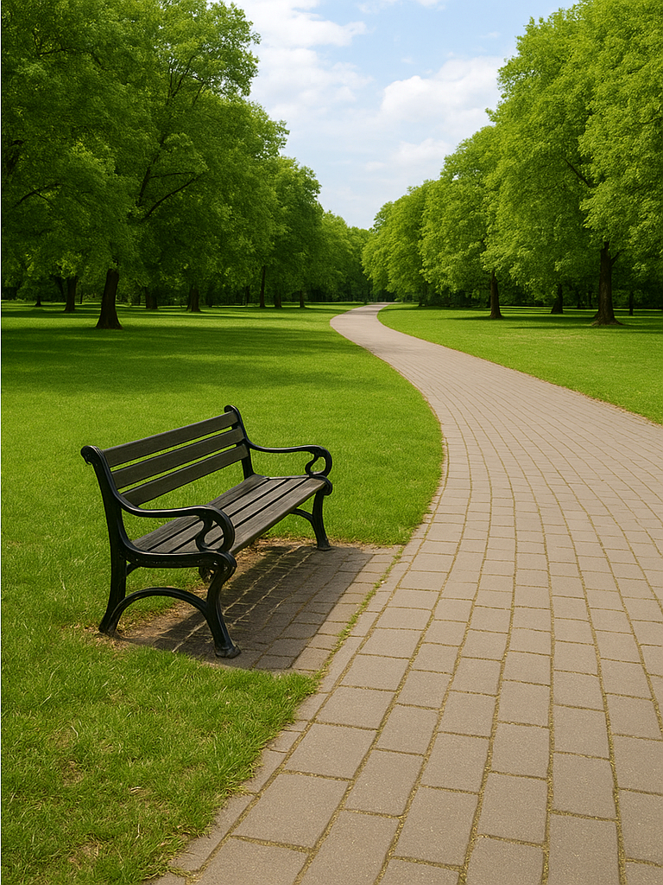
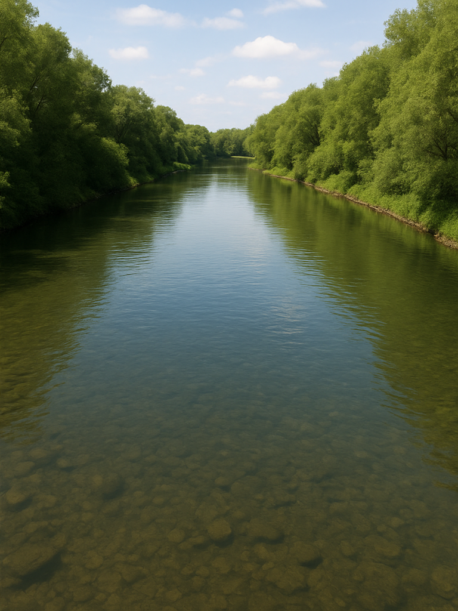

The World is like curser 🌍


.png)

At EcoClean, we are driven by a shared belief that a cleaner world is a healthier world. Our mission, vision, and values guide every action, campaign, and initiative we undertake to protect our planet and empower people to take responsibility for a greener tomorrow.
🌱 Mission
Our mission is to empower individuals, communities, and governments to build sustainable waste management systems through education, collaboration, and action. We aim to transform awareness into responsibility and responsibility into results — promoting green practices that reduce pollution and encourage recycling.
We collaborate globally with organizations, volunteers, and eco-activists to implement impactful programs. Through clean-up drives, waste segregation education, and recycling initiatives, we foster collective responsibility for environmental sustainability.
🌍 Vision
Our vision is a waste-free, eco-conscious planet where humans and nature thrive in harmony. We envision cities without landfills, oceans without plastic, and communities that reuse, recycle, and respect the natural balance.
By 2030, EcoClean aims to inspire over 10 million people worldwide to take sustainable actions daily — creating a global ripple effect that restores the Earth's natural beauty and balance.
🌿 Core Values
Positivity
We believe in optimism as the seed for change. By fostering a hopeful outlook, we motivate others to act responsibly for a better planet.
Inclusivity
Everyone has a role to play in restoring Earth. We unite people from all backgrounds, cultures, and nations under one green mission.
Responsibility
True change starts with accountability. We encourage individuals and organizations alike to lead by example through sustainable habits.
Transparency
We believe in honesty, openness, and trust. Our work is guided by clear communication and ethical principles in all decisions.
🌏 Our Commitment to the Future
EcoClean pledges to continue innovating and evolving to meet the world's growing environmental challenges. We will invest in green technology, empower eco-leaders, and raise awareness about the importance of sustainability across all generations.
Together, we can transform hope into action, action into impact, and impact into a sustainable legacy for future generations.
Join the Clean Earth Movement
Every person's effort counts. Start by keeping your home and street clean, reduce waste, and inspire others. Together, we can protect our planet and build a cleaner, greener, and safer future for generations to come.
About Cleaning Awareness
Understanding the Need for Cleanliness
Cleaning awareness is about more than just removing dirt; it's about creating respect for our surroundings and nature. A clean environment ensures healthy living and spreads positive energy throughout the community.
When we keep our homes, schools, and public places clean, we protect ourselves from diseases and pollution. Cleanliness is the foundation of a strong and responsible society. Every citizen has a role to play in maintaining the balance of our planet.
Why Cleaning Awareness Is Important
Cleanliness prevents the spread of harmful bacteria and viruses, keeping our environment safe. When garbage and waste are managed properly, air, water, and soil remain pure. This helps both humans and wildlife to survive and thrive.
A clean city attracts tourism, promotes good health, and encourages community pride. Clean surroundings reduce stress and make people more productive. It's not only about hygiene — it's about creating harmony with nature and ensuring sustainability.
If we fail to act now, pollution will continue to damage ecosystems, forests, and oceans. Raising awareness helps individuals understand that even small changes — like reducing plastic waste — can make a big difference for our future.
Simple Cleaning Tips Everyone Can Follow
- Use Separate Bins: Keep dry and wet waste separate for recycling.
- Avoid Plastic: Switch to reusable cloth bags instead of single-use plastic.
- Keep Water Clean: Don't throw waste or chemicals into rivers or drains.
- Join Local Drives: Be part of neighborhood or school cleaning programs.
- Plant Trees: Trees act as nature's filters — they clean the air and support biodiversity.
- Spread Awareness: Educate friends and family about keeping the environment clean.
.png)
.png)